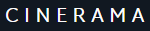

<nav class="navbar navbar-expand-lg navbar-dark bg-dark">
    <a class="navbar-brand" routerLink="Home">
        
    </a>
    <button class="navbar-toggler d-lg-none" type="button" data-toggle="collapse" data-target="#collapsibleNavId" aria-controls="collapsibleNavId"
        aria-expanded="false" aria-label="Toggle navigation">
        <span class="navbar-toggler-icon"></span>
    </button>
    <div class="collapse navbar-collapse" id="collapsibleNavId">
        <div class="container">
            <ul class="navbar-nav mt-2 mt-lg-0 mx-auto nav-fill">
                <li class="nav-item">
                    <a class="nav-link" routerLink="Home">Home</a>
                </li>
                <li class="nav-item">
                    <a class="nav-link" routerLink="Movies">Movies</a>
                </li>
                <li class="nav-item">
                    <a class="nav-link" routerLink="TV">TV</a>
                </li>
                <li class="nav-item">
                    <a class="nav-link" routerLink="People">People</a>
                </li>
                <li class="nav-item">
                    <a class="nav-link" routerLink="About">About</a>
                </li>
                <li class="nav-item">
                    <a class="nav-link" routerLink="Contacts">Contacts</a>
                </li>
            </ul>
            <ul class="navbar-nav mt-2 mt-lg-0 socialIcons">
                <li class="nav-item">
                    <a class="nav-link" href="https://www.facebook.com/SondosSamii">
                        <i class="fab fa-facebook-f"></i>
                    </a>
                </li>
                <li class="nav-item">
                    <a class="nav-link" href="https://www.youtube.com/SondosSamii">
                        <i class="fab fa-youtube"></i>
                    </a>
                </li>
                <li class="nav-item">
                    <a class="nav-link" href="https://www.instagram.com/SondosSamii">
                        <i class="fab fa-instagram"></i>
                    </a>
                </li>
                <li class="nav-item">
                    <a class="nav-link" href="https://www.twitter.com/SondosSamii">
                        <i class="fab fa-twitter"></i>
                    </a>
                </li>
            </ul>
        </div>
    </div>
</nav>